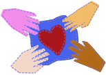
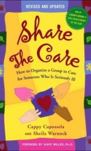
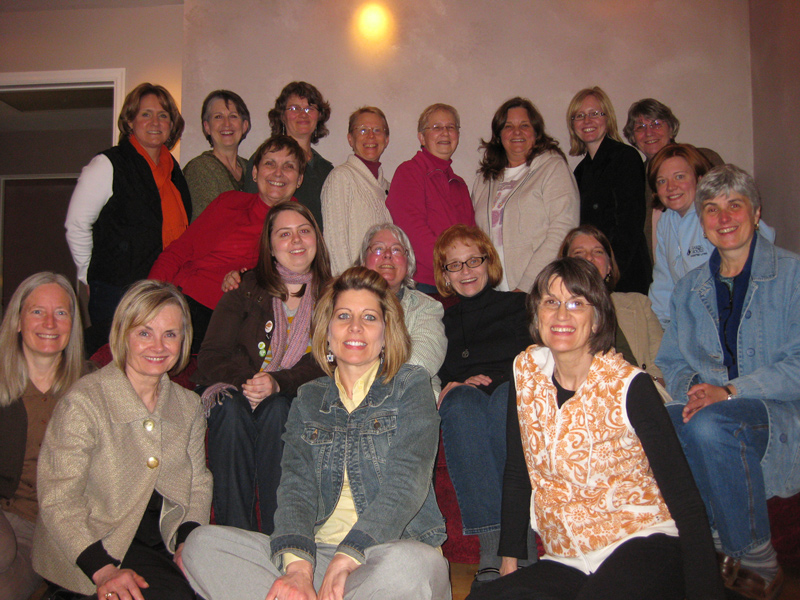
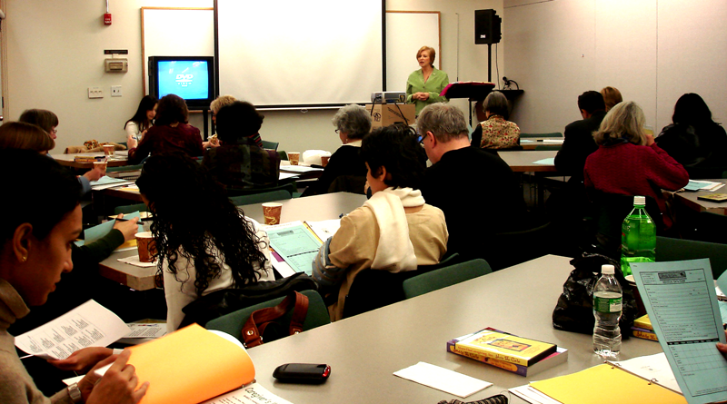
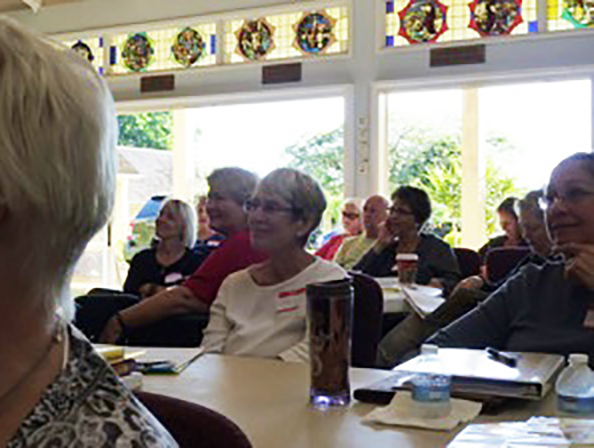

Caregiving will touch everyone at some point in life yet most people don’t recognize it as a critical issue. They are not aware that today more than 65 million people (29% of the population) are serving in that role and are burning out fast.
Or that many more caregivers will be needed as our aging population doubles to 71 million by 2030. And that 25 million people are projected to develop dementia by 2050 unless a cure is found.
Caregiving responsibility tends to fall upon one or two family members who in many instances are also holding down jobs and have children.
This scenario can lead to poor health for the caregiver and isolation of the person in need of care. And people who live alone (far from or without family) are especially in need of support when a health crisis hits.
So, who is going to take care of everybody in the future with the escalating cost of health care, home care, and a declining number of health professionals?
We Believe That It's Going To Take
All Of Us Working Together

We Can Make A Difference
What Is STC
Just as in the pioneer days when one’s very survival depended on the help and cooperation of neighbors, Share The Care™ (STC) is that “barn-raising” mentality brought into the fast paced 21st century. STC provides us with an opportunity to become part of the solution to the caregiving crisis.

STC is a grassroots guidebook, first published by Simon & Schuster in 1995, and born out of the real-life experiences of the authors and put into a step-by-step format so that others pool their time, efforts and resources to assist a friend or loved one facing a health, aging or medical crisis. And uniquely the STC model provides information and suggestions on how to maintain the group’s (and individual caregiver’s) efforts over time.
The goal was to make creating a “caregiving family” easy to replicate and eliminate the need to reinvent the wheel. (See THE STORY) (See EXCERPTS)
And replicate we have, STC has been documented in 48 states and 13 countries to date. And interest continues to grow globally.
Best of all, there is no limit to the potential reach and value of the STC model. The exigencies of caregiving cut across racial, geographic, age and gender as well as socioeconomic lines.

“Morning Glories” WI STC Group
Who STC Helps
For nearly 20 years, Share The Care™ (STC) has spread “word of mouth” by people who have used it or by the professionals who recognize and understand the value. It wasn’t until 2004 that the non-profit organization (STCG) was established to bring it to a much wider audience. (see The Story Behind STCG)
The key reason for STC’s success starts with the first meeting. As friends, neighbors, relatives, co-workers and acquaintances gather to be briefed on the situation and what kind of help will be needed they will also be introduced to the STC systems, forms and 7 principles. Many have expressed a sense of relief knowing that there is a well worn plan of action to follow. Best of all, the meeting is a show of love and commitment for the person in need and their family.
Michelle’s STC Group – A View of STC from Many Perspectives
Over and over we hear how working this way has made a significant difference regardless of the challenge or circumstance — whether a person (of any age) needs short-term rehabilitation, has a disability, or is suffering from long-term or terminal illness. It has been a real gift for those facing the increased difficulties associated with aging and want to remain at home as long as possible.
It has helped grandparents raising small children, women going through a difficult pregnancy, widows(ers) with small children going through bereavement, and even on joyous occasions like helping care for newborn quadruplets or triplets. The only thing that limits STC – is one’s imagination.
STC recipients, families and caregivers alike, tell us they have experienced solace, support and even joy in the midst of difficult and sometimes, tragic life circumstances.
“But the best gift Share The Care™ gave to me personally was the gift of time. The program allowed me to spend more quality time with Kevin. I knew my time with him was limited, and I didn’t want to waste it going grocery shopping or running to the cleaners. I wanted to be with him as much as possible.
While a caregiver to Kevin, I was also the mother of a young child. I often felt torn between caring for Kevin and our daughter Alina. I made the decision to ask our Share The Care group to help with Alina’s extracurricular activities. Volunteers came through, and their help brought me great joy.”
Jodi O’Donnell Ames
“The encouragement and the practical suggestions of Share The Care are making the difference between my wife, Betsy, spending her last years in a nursing home and spending her last years in our home, surrounded by people (Team Betsy) who love her.
Richard Baer
“I want to let you know that the meeting to set up Doreen’s Doers went really well. We managed to contain it to 2 1/2 hours and Doreen stayed throughout.
She was unable to talk very much as, for the first time since she told me of her diagnosis, she was emotional. It was seeing so many friends who want to help and she couldn’t say much, which is not typical! I gave her other opportunities later on.”
Margaret Eldridge
“I can now dispute the cliche that blood is thicker than water. I have an extended family that is my family. You are absolutely incredible. I want you all to know that you are my source of strength, my courage. You comfort me, you cry with me, you laugh with me. You have been my medicine. I love you from the bottom of my heart.”
Francine Cina
“I got to really know Susan and get a first hand lesson in courage and great humor in the midst of trauma, distress and pain. As for the group I felt women sharing real respect for each other, true sensitivity and instant warm camaraderie.”
B. Delgado
From Health Professionals:
“Share The Care™ can make a difference for me personally. I have a friend living with disability, no family, and I am the caregiver. So I am very excited about establishing a group for her safety and my sanity.”
Hospice worker
“Sheila Warnock’s book Share The Care™ will lead the national hospice movement to its next step, meeting the needs of the millions of Americans living alone who will need hospice care. Her work is groundbreaking.”
Deborah Duda, author
Coming Home A Practical and Compassionate Guide to Caring for a Dying Loved One
“I recently saw your book at the Salt Lake City Cancer Wellness House. I think it’s the best resource I’ve ever encountered on this subject. I immediately ordered a copy and have recommended it to many friends and colleagues.”
M. L. Winningham APRN, Ph.D. FACSM
“As a nurse on a Bone Marrow transplant unit, I deal with very sick patients on a frequent basis... It’s always hard for myself, and other caregivers, to deal with the helpless feelings during a severe illness. This is why I would like to spread the word about “Funny Families’.”
K. Bucko, RN
Following STC Professional Training:
“Too often we “workers” think about what we can’t do. This shows what we can do – need to do. Warehousing elders in Nursing Homes is very sad. Finding ways to keep people at home safely should be our aim for those who want this.”
Case Manager
“The exercise about working as a team around a specific case was eye-opening in all the multiple needs that can come up and how do you encompass all of that. I found the story build-up and history also important to make the experience complete.”
Client Services Manager
From Faith Communities:
“I was all alone. I prayed a lot but I was afraid that nobody would know if something happened to me. Now a wonderful person gives me a ride to church on Sunday, and helps me get to doctor appointments. Somebody calls me on the phone every morning to make sure I am okay. I have so much support now! It is wonderful, and I love this church.”
Long-time member First Presbyterian Church of Forest Hills
“I found your book about 2 and a half years ago when a friend was being treated for cancer. I was the coordinator of her Share The Care™ group and the book told me everything I needed to get started. We took care of our friend until she died in April of 1999 and it was a profound experience.
During that time, I spoke to several churches in the Madison, WI area about Share The Care™ and many more groups have been formed.”
L. Dillenberg
“A key in Share The Care™ is you identify the connection to the person. Kaye herself believes it will work and is willing to let it work. Then there is Bethany and Ada’s belief and their willingness to ask people to be involved. That tactic helps people understand it is not a tragic or hopeless situation. Instead of not knowing how they can help, they hear what jobs are needed, and equally important, have the right to say no.”
Rev. Linda Carlson, Jackson Citizen Patriot
STC Offerings
The ShareTheCaregiving organization (STCG), founded in 2004, rather than providing a service, is dedicated to advocating and educating people about the need and responsibility we have to help each other and offering them a rewarding way to do so – through sharing the care.
Using the step-by-step model, groups go far beyond just organizing. They become empowered during the first face-to-face meeting where everyone learns how Share The Care™ (STC) works, what skills and talents are available among the participants, and people commit to being part of the group.

STC provides detailed suggestions on maintaining the group’s efforts through the ups and downs that come with any challenge. The team learns the signals when they need to re-adjust their care as the needs or condition of the care recipient changes over time.
Our approach is along the lines of the proverb:
“Give A Man A Fish And He Will Eat For A Day. Teach A Man To Fish And He Will Eat For A Lifetime.”
We are proud to say that participants of STC groups and even care recipients routinely go on to recommend this approach and even help other groups get on their feet. We recently spoke to a breast cancer survivor who once she had gone into remission was eager to help others. In fact, she was on her fourth STC group.

Your organization (alone or in conjunction with several others) can book a full day accredited professional training, a workshop, presentation, or book Founder Sheila Warnock to speak at your next professional (or caregiver) conference or upcoming event.
We also target students of social work and nursing as they will be in the trenches tomorrow. We are working towards getting a STC curriculum into schools and universities.
We provide email and telephone support and maintain the website to offer resources, stories, links to purchase the book, and much, more. The book rights to STC are owned by STCG.
What started as just a book has blossomed into an organization that is teaching and spreading the word about the model... and in some areas has even become a movement.
It is important to note that a research evaluation is also underway. Click here for details.
STC Endorsements
Noteworthy Endorsements for the STC guidebook (2004 edition)
“Share The Care™ is one of the best books ever written to help family caregivers. I was wowed by the first edition and this one is even better. Family caregiving is more than a one-person job, and the Share The Care™ model is the best way I know to balance the load and thereby let caregiving families know that they are definitely not alone. A must read for family caregivers and all who care about them.”
Suzanne Mintz President/Co-founder National Family Caregivers Association
“The guidelines and support offered in this book were invaluable to the Share The Care™ Circle organized to assist my sister Mimi [Fariña] during a long illness, and in her case, dying process.
It was the tool that enabled everyone who wanted to help to do just that – in an organized and comfortable (for Mimi) manner. The authors’ experience, wisdom and caring shines through in this publication, and I cannot recommend it highly enough for anyone who wants to start, run or be involved in a caregiver group.”
Joan Baez
“The ALS Association is pleased to endorse Share The Care™ as a wonderful example of a model of caring support that makes a meaningful difference for all who participate.
The tools, techniques and guidance in Share The Care™ offer a comprehensive plan that has provided valuable assistance to many people with ALS and their families.”
Mary Lyon, RN, MN Vice President, Patient Services The ALS Association
“Share The Care™ transcends the pictures of what volunteerism is about. It is a step-by-step directive for creating a nurturing, heartfelt group of supportive partners in the caring process for an individual who is terminally ill, chronically ill or disabled. It helps in maintaining their dignity and independency too so they may live their lives more fully; the program is innovative, builds community and is the wave of the future for caregiving.”
Gail R. Mitchell – President National Organization For Empowering Caregivers
“A book for anyone who has ever wondered how to help a critically ill loved one and felt overwhelmed by their needs. Share The Care™ is clear, practical and powerfully effective. What a Blessing!”
Rachel Naomi Remen, M.D.
Author, Kitchen Table Wisdom, My Grandfather’s Blessings,
Professor of Clinical Medicine, UCSF School of Medicine,
Founder & Director, Institute For The Study Of Health And Illness at Commonweal
“It takes a village to care for patients dealing with cancer, both for those at diagnosis and for those with advanced disease. SShare The Care™ is a superb model for activating and sustaining that village. The model enriches the lives of all involved.”
James F. Cleary, MD,
Associate Professor of Medicine (Medical Oncology) University of Wisconsin – Madison
Director, Palliative Care Program, University of Wisconsin Comprehensive Cancer Center